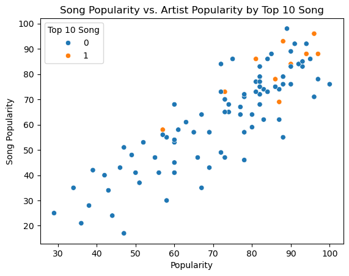
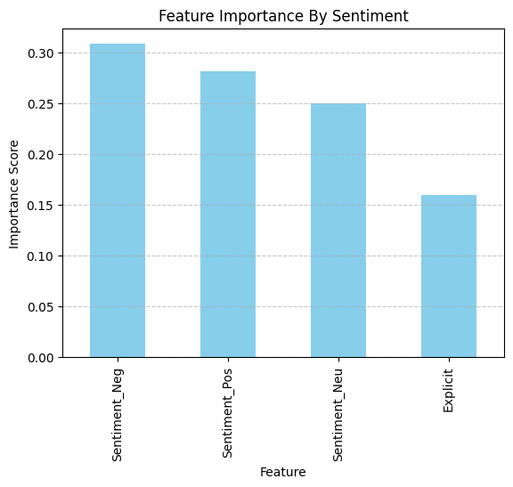
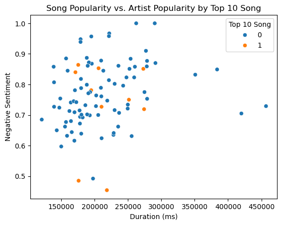
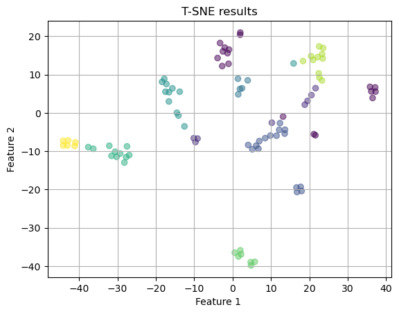
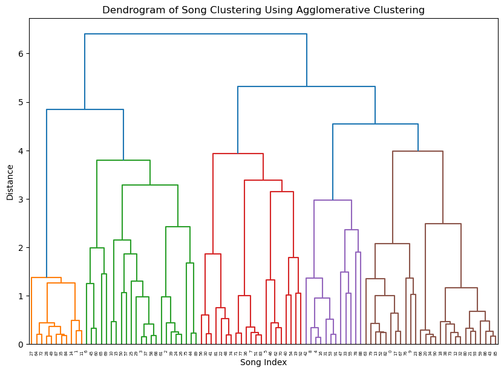
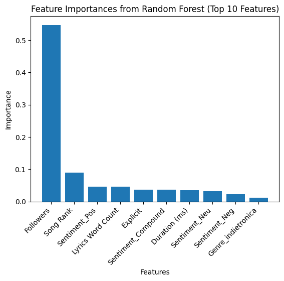
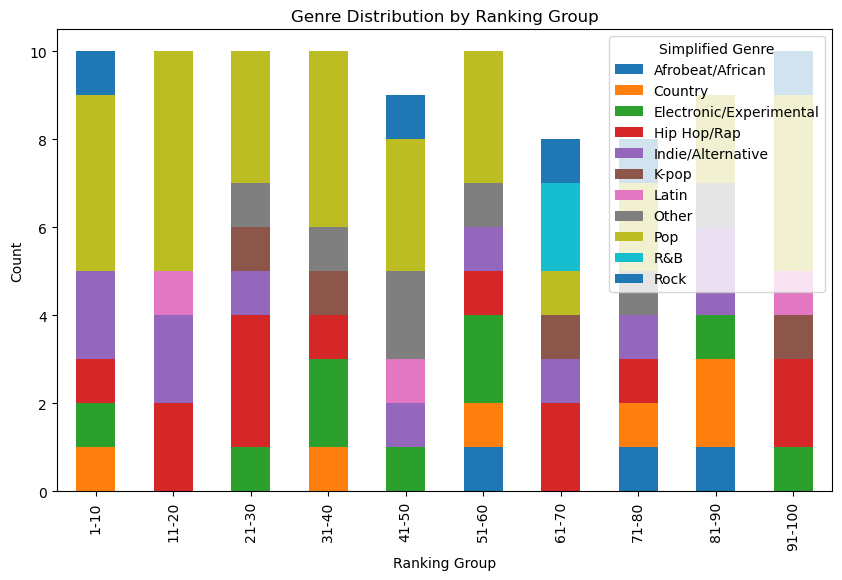
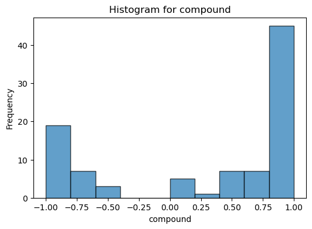

Decoding Song Success - Final Report
Executive Summary
This report, Decoding Song Success, uses a wide range of data visualization and machine learning tools to study the factors that make the hit songs hits. Successful songs were measured by their rank on the Rolling Stone Top 100 songs. By integrating natural language processing (NLP), sentiment anlaysis, and machine learning models, we explored the relationship between lyrical, musical, and artist-specific characteristics of the top songs in the country to identify the key drivers of song success.
Some of the key findings outlined in this report can be found below: 1. Artist popularity plays an important role in song success, with highly popular artists being more likely to have a song at the top of the charts. 2. Emotionally extreme sentiments are strongly correlated with popularity, while neutral sentiments cause songs to not perform as well. 3. Genre features are key drivers in clustering songs, with methods like hierarchical clustering revealing strong patterns within genres. 4. External factors such as social media popularity and marketing likely have an impact on top-ranked songs, which don’t form distinct clusters based on the features studied in this report alone.
These findings have important implications for the music industry, from songwriting strategies to playlist curation and personalized song recommendations.
Objective
This project aims to identify the key factors that contribute to a song’s popularity. We focused on how sentiment, genre, and artist popularity influence success. By analyzing a dataset of Rolling Stone’s top 100 songs, we were able to uncover patterns and relationships that can provide rising artists, music producers, and music platforms with strategies and a deeper understanding of what makes a hit song.
Key Insights and Visualizations
Artist Popularity
A positive linear relationship was found between artist popularity and song popularity on Spotify. This means that more popular artists are more likely to have highly popular songs. This suggests that newer or lesser-known artists may face challenges breaking into the top ranks unless they have strong support from existing fanbases.

Sentiment Analysis Reveals Listener Preferences
Songs with negative sentiment tend to perform better in terms of popularity. Explicit content also doesn’t appear to affect popularity significantly. This may be a result of factors like radio stations and public locations not being able to play explicit music. These findings go against the assumption that positive songs perform better, indicating that listeners preference are much more nuanced.

Song Duration and Sentiment are Interralted
Longer songs tend to be more negative, and shorter songs tend to have more positive sentiment. This pattern can inform music producers and artists about the emotional impact of a song length. Producers may want to take this into consideration when creating songs that they hope to have certain impacts on listeners.

Genre is a Strong Influence on Clustering
Genre playes a significant role in clustering, with songs from the same genre sharing measurable similarities in features such as duration, sentiment, and word count. However, top 10 songs were distributed across multiple clusters, suggesting that success isn’t only dependent on the genre of the song or other features in this dataset. The importance of this lies in the success of certain songs in specific genres. Since all of this data comes from the Rolling Stone’s Top 100 Songs, it is informative that the songs clustered so nicely into their genres. This shows that there is a formula for success in a given genre. Outliers in the genre clusters were not very common amongst the top 100 songs, so adhering to the rules setup by these genre groupings seems to be a key to success.

Playlist Curation from Clusters
Hierarchical clustering performed the best in grouping songs into 9 clusters, with clear separations between groups. See the above graph for these clusters as visualized on T-SNE. The existence of these clear groupings could be used for a strong song recommendation system based on their preferences.

Supervised Learning Models: Gradient Boosting and Random Forest
The Random Forest Regressor was able to use the supplied features to predict the popularity of moderately successful songs with higher accuracy. Gradient Boosting was able to predict Song Rank with extremely high accuracy. Highly important features included sentiment columns, the word counts of the lyrics, and the followers of the artist (as explained above). This emphasizes the role of emotional tone in song success which could inform marketing strategies and playlist creation.

General observations
Genre Distribution
Pop dominates the top songs. However, there is a good mix of other genres across all of the top rankings.

Emotional Scores
There are peaks in compound emotional score at the most extreme sides of the axis, meaning that the most popular songs are very skewed towards one extreme sentiment or the other.

Business Implications
These findings can be useful to a wide range of people who are heavily involved in the music industry. The goals of improving song performance, curating a personalized experiences for listeners, and uplifting emerging artists could be suppoprted by our outcomes.
Artists and Producers:
Popular artists have a clear advantage in their songs achieving success on the charts, as demonstrated by the highly positive correlation between artist popularity and song popularity. This might make it much harder for emerging artists to find their songs higher up in rankings.
In terms of actually producing music, the perceived lyrical sentiment has a big impact on the success of the song. Sentiment analysis has shown that songs with lyrics that convey an extreme emotion (both positive and negative) resonate more with listeners than neutral songs.
Songs that follow the conventions of genres are much more likely to succeed. Artists with songs that are considered “outliers” were not very common in the top 100 chart.
Streaming Platforms:
Clustering results and genre-based grouping seem to be really important when it comes to finding similar songs for something like a recommendation system. Playlists with priorities on genre features and extreme emotional sentiment end up being the most influential on consumer preferences. Finding similar songs by genre (and using a very accurate system to identify and label these genres) is very important.
Recommendations
Based on the insights and business implications, here are some steps for various players in the music industry might take to maximize the potential for their songs to achieve success and to increase listener engagement.
For Artists and Producers
Emotional Lyrics and Extreme Sentiments: Focus on writing and producing songs that are clear in their emotional tones (whether it is positive or negative) to connect better with listeners. Avoid neutral or balanced sentiment. Adopting this could lead to a song that charts higher because it aligns better with consumer preferences.
Collaborate with Popular Artists: Since it is so difficult for less popular artists to breakthrough, emerging artists should collaborate with artists with an established fanbase. This might increase visibility and the credibility of the new artist, leading to an increase in streams and audience reach. This will also help increase the new artist’s popularity, ultimately giving them the opportunity to achieve success on their own.
Adhere to Genre Norms: Stick to established patterns within a genre to improve a song’s chance of success. Creativity is extremely important in this field but staying aligned with the conventions when it comes to features like song duration, lyric word length, and sentiment might increase listener acceptance and chart performance.
For Streaming Platforms
Better Recommendation Algorithms: Incorporate hierarchical clustering and T-SNE results to imporve song reecommendation systems. By suggesting songs from the same cluster, the user will be exposed to songs that they will more than likely enjoy and increase user engagement.
Promote Non-Top 10 Songs Within Clusters: Since top-10 songs are spread throughout the clusters, streaming platforms might be able to create themed playlists that showcase lesser-known songs that the user will probably like to listen to if they liked the top-10 song. This could increase streams for top-10 songs and broaden user’s artist exposure, ultimately giving them more to listen to and increasing engagement.
Focus on Sentiment-Based Playlists: Curated playlists for specific extreme moods could resonate more with users, allowing them to find songs that match their emotional preference. This will increase user retention and help address user needs on a more specific scale.
For Marketing Teams
Prioritize Artist Branding on Social Media: Artist popularity significantly impacts song success. Making sure the artist is well-known and has a strong fanbase will greatly increase the probability that the song will make it to the charts. Additionally, collaboration is often found through social media success and fan interactions, leading to a better chance at increasing popularity.
Emotionally Driven Advertising: Tying the marketing of songs to the extreme emotions portrayed throught their tones could be helpful. The lyrics should convey an extreme emotion, and showing potential listeners that it does will help draw interest.
Potential For Innovation
- These ML techniques show the most likely chances at success. However, attempting to combine multiple pieces might lead to some innovative progress in the music industry. For example, a songwriter blending elements from multiple particularly successful clusters might help create unique songs that can still be considered following genre conventions. This could even appeal to multiple listener bases, which would increase exposure and stream counts.
Conclusion
This analysis of the Rolling Stone Top 100 Songs has uncovered valuable insights into the factors driving song success. Key findings show the importance of artist popularity, the influence of emotionally extreme sentiments, and the value in adhering to genre-specific trends. At the same time, clustering algorithms showed that success is not solely determined by these factors and that external factors like social media and marketing might also influence whether a song will be a hit.
We used ML models, sentiment analysis, and clustering techniques to provide actionable strategies for artists, producers, streaming platforms, and marketing teams to support their efforts in creating, promoting, and spreading successful songs. Understanding listener preferences found through data and supporting the creative process with business strategies are truly the key to achieving success in the music industry.
Next Steps:
Add more features to the dataset such as social media metrics, deeper lyric analysis, and data over multiple time periods to conduct further and more accurate analysis.
Focus on personalization: Use insights from clustering and popularity metrics to find more nuanced ways to promote listener engagement and support rising artists
By combining data-driven insights with artistic creativity, the music industry can adapt to changing listener preferences and create songs that truly connect with audiences.